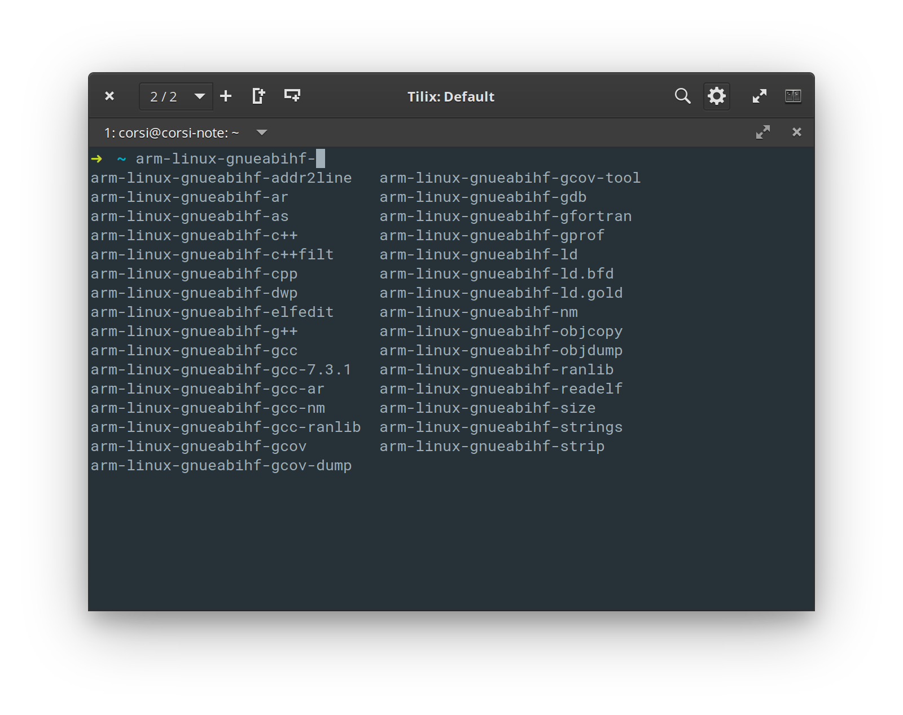

Tutorial 5 - HPS - Infra¶
2020-2
- Material atualizado.
Vamos instalar o ferramental (compiladores) que será utilizado para compilar o kernel e o filesystem. Deveremos instalar o soceds e o linaro-gcc .
Intel SOCDES¶
!! ! warning Usando o ssd fornecido? Pode pular essa parte de instalar o soceds, siga para instalar o toolchain
Você irá precisar ter o software SOCEDS instalado, e ele precisa ser a mesma versão do Quartus. Link para download:
Vamos precisar inserir no path do bash referência para uma série de softwares a serem usados, modifique seu .bashrc inserindo:
Ao fazer o download do soceds deve-se verificar para ser a mesma versão do Quartus.
export ALTERAPATH=~/intelFPGA/18.1/
export ALTERAPATH=/home/corsi/opt/intelFPGA/18.1
export QUARTUS_ROOTDIR=$ALTERAPATH/quartus/
export PATH=$PATH:${ALTERAPATH}/quartus/bin
export PATH=$PATH:${ALTERAPATH}/modelsim_ase/linuxaloem/
export PATH=$PATH:${ALTERAPATH}/quartus/sopc_builder/bin/
export PATH=$PATH:${ALTERAPATH}/embedded/
export PATH=$PATH:${ALTERAPATH}/embedded/host_tools/altera/preloadergen/
export PATH=$PATH:${ALTERAPATH}/hls/bin/
export LD_LIBRARY_PATH=${ALTERAPATH}/hls/host/linux64/lib/
export PATH=$PATH:${ALTERAPATH}/nios2eds/
export PATH=$PATH:${ALTERAPATH}/nios2eds/sdk2/bin/
export SOCEDS_DEST_ROOT=${ALTERAPATH}/embedded
export SOCEDS_HWLIB=${ALTERAPATH}/embedded/ip/altera/hps/altera_hps/hwlib/
Note
Lembre de verificar se o ALTERAPATH desse exemplo é o caminho correto da instalação do Quartus
outros bashs
Se estiver usando outro bash (zsh/ fish) será necessário editar o arquivo de configuração referente.
Testando¶
Para testar, digite no terminal nios2_command_shell.sh (após abrir uma nova aba, ou executar source ~/.bashrc):
$ nios2_command_shell.sh
------------------------------------------------
Altera Nios2 Command Shell [GCC 4]
Version 16.1, Build 196
------------------------------------------------
$ exit
Note
Isso só testa uma parte da instalação (soceds)
GCC toolchain¶
Iremos utilizar o GCC cross compile fornecido pelo Linaro, esse mesmo GCC será utilizado para compilar o Kernel, gerar o file system e compilar os programas que executarão no Linux.
Wikipidia Linaro
Linaro is an engineering organization that works on free and open-source software such as the Linux kernel, the GNU Compiler Collection, power management, graphics and multimedia interfaces for the ARM family of instruction sets and implementations thereof as well as for the Heterogeneous System Architecture.
gcc
No site do linaro existem vários GCC diferentes, cada um com uma configuração diferente. O que vamos usar é arm-linux-gnueabihf isso significa:
linux: para compilar programas que executarão no linux (poderia ser baremetal)eabi: Embedded Application Binary Interface para ser usado pelo sistema operacional.hf: usa multiplicação de ponto flutuante de hardware
Do site de binários do Linaro abaixe a versão gcc-linaro-7.4.1-2019.02-x86_64_arm-linux-gnueabihf.tar.xz e extraía para alguma pasta no seu Linux.
Quer baixar via terminal?
Meus projetos ficam todos dentro da pasta: /home/corsi/work/, por isso eu extraí para lá. Você pode escolher outro local.
$ cd ~/work
$ wget https://releases.linaro.org/components/toolchain/binaries/latest-7/arm-linux-gnueabihf/gcc-linaro-7.4.1-2019.02-x86_64_arm-linux-gnueabihf.tar.xz
$ tar xvf gcc-linaro-7.4.1-2019.02-x86_64_arm-linux-gnueabihf.tar.xz
De uma olhada na pasta recém extraída:
$ cd gcc-linaro-7.4.1-2019.02-x86_64_arm-linux-gnueabihf
$ tree -L 1
...
+ arm-linux-gnueabihf
+ bin
+ arm-linux-gnueabihf-addr2line
+ arm-linux-gnueabihf-ar
+ ...
+ arm-linux-gnueabihf-c++
+ arm-linux-gnueabihf-g++
+ arm-linux-gnueabihf-gcc
+ include
+ lib
+ libexec
+ share
Temos todas as ferramentas necessárias para compilar e linkar códigos em C e C++ para o ARM.
Note que no path do gcc temos o prefixo : gnueabihf.
Pesquisa
Qual a diferença entre eabi e hf
Criando um atalho no bash¶
Vamos criar um atalho para essa pasta no bash. Edite o arquivo ~/.bashrc para incluir a pasta ~/work/gcc-linaro.../bin/ na variável do sistema: GCC_Linaro.
# GCC Linaro on path
export GCC_Linaro=/home/corsi/work/gcc-linaro-7.4.1-2019.02-x86_64_arm-linux-gnueabihf/bin
export PATH=$PATH:${GCC_Linaro}
Note
Edite o comando para a pasta correta de onde Linaro foi extraído: /home/...
Agora temos um atalho para o gcc-arm, vamos testar :
$ $GCC_Linaro/arm-linux-gnueabihf-gcc -v
...
Using built-in specs.
COLLECT_GCC=/home/corsi/work/gcc-linaro-7.4.1-2019.02-x86_64_arm-linux-gnueabihf/bin/arm-linux-gnueabihf-gcc
COLLECT_LTO_WRAPPER=/home/corsi/work/gcc-linaro-7.4.1-2019.02-x86_64_arm-linux-gnueabihf/bin/../libexec/gcc/arm-linux-gnueabihf/7.4.1/lto-wrapper
E ele também deve estar no path, como arm-linux-*:

Note
É possível instalar o arm-linux via apt install, mas não vamos fazer isso pois queremos ter controle da versão do compilador que estamos utilizando.
bashrc ao final
Eu não modifico meu bashrc, o que eu faço é criar um arquivo com o nome: Quartus18.sh
e coloco toda essa configuração nele, e quando eu quero trabalhar na disciplina eu só
preciso executar source ~/Quartus18.sh e tenho meu ambiente configurado. Com isso, eu tenho
a vantagem de ter 'várias' versões instaladas e selecionar a que quero trabalhar.
Isso também funciona pois eu tenho ambientes diferentes, com base nas disciplinas: Elementos tem um e Avançados outro.
Meu Quartus18.sh é o seguinte:
echo "INTEL FPGA QUARTUS 18.1"
export MGLS_LICENSE_FILE=/home/corsi/opt/intelFPGA/1-MBTRJ3_License.dat
export LM_LICENSE_FILE=/home/corsi/opt/intelFPGA/1-MBTRJ3_License.dat
export ALTERAPATH=/home/corsi/opt/intelFPGA/18.1
export QUARTUS_ROOTDIR=$ALTERAPATH/quartus/
export PATH=$PATH:${ALTERAPATH}/quartus/bin
export PATH=$PATH:${ALTERAPATH}/modelsim_ase/linuxaloem/
export PATH=$PATH:${ALTERAPATH}/quartus/sopc_builder/bin/
export PATH=$PATH:${ALTERAPATH}/embedded/
export PATH=$PATH:${ALTERAPATH}/embedded/host_tools/altera/preloadergen/
export PATH=$PATH:${ALTERAPATH}/hls/bin/
export LD_LIBRARY_PATH=${ALTERAPATH}/hls/host/linux64/lib/
export PATH=$PATH:${ALTERAPATH}/nios2eds/
export PATH=$PATH:${ALTERAPATH}/nios2eds/sdk2/bin/
export SOCEDS_DEST_ROOT=${ALTERAPATH}/embedded
export SOCEDS_HWLIB=${ALTERAPATH}/embedded/ip/altera/hps/altera_hps/hwlib/
export GCC_Linaro=/home/corsi/work/gcc-linaro-7.4.1-2019.02-x86_64_arm-linux-gnueabihf/bin
export PATH=$PATH:${GCC_Linaro}